이스토리 동굴
잠수함으로 이스토리 폭포 아래로 들어갈 수 있는데, 바로 제4석판이 봉인된 곳입니다. 물길따라 잘 찾아 가시고, 최강 장비들이 많으니 빠짐없이 챙기세요. 세이브존 바로 아래층은 ABP를 모으기 좋은 곳입니다. 이 곳에서는 FF시리즈의 전통적인 강적인 돈베리가 등장합니다. 정말 어려운 놈이지만 도전해 볼 만 합니다.
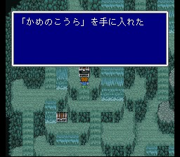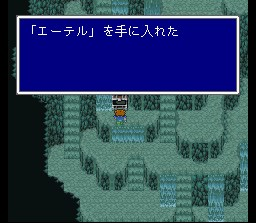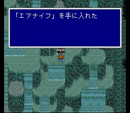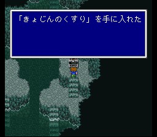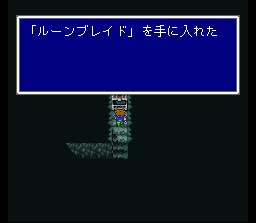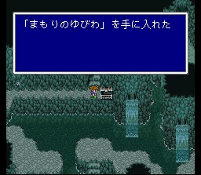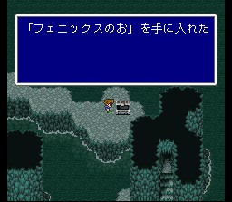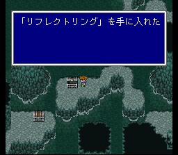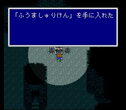
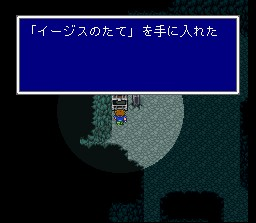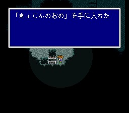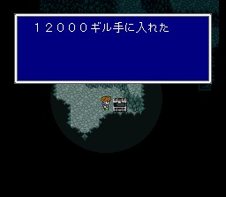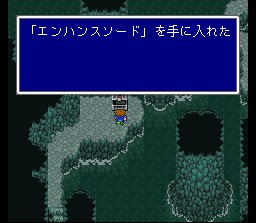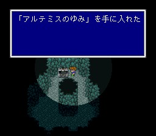
최하층의 함정을 조작하면 석판이 있는 곳으로 갈 수 있는데, 석판을 지키는 놈들이 등장합니다만 리바이어선이 나타나 그들을 처리합니다. 그리고 리바이어선과 대적하게 됩니다. 대해일이 강력합니다만, 대결 전 산호의 반지를 장비해 주시면 쉽습니다. 게다가 전기가 약점이니.. 물리치면 제4석판과 소환수 리바이어선을 얻습니다. 역시 큰 도움이 되는 소환수입니다.